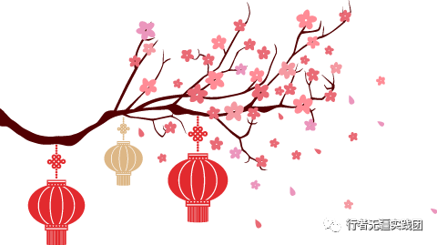
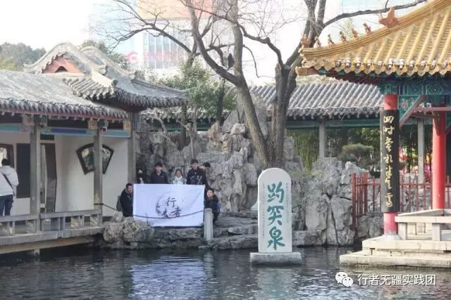
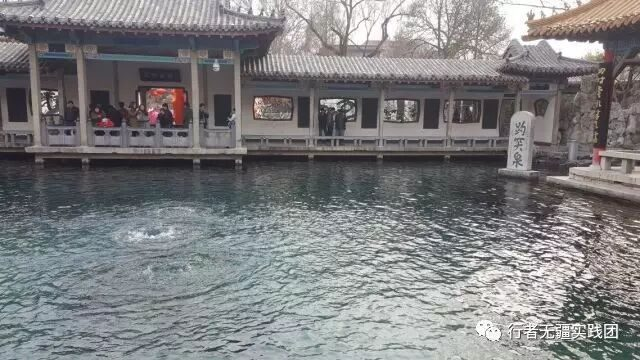
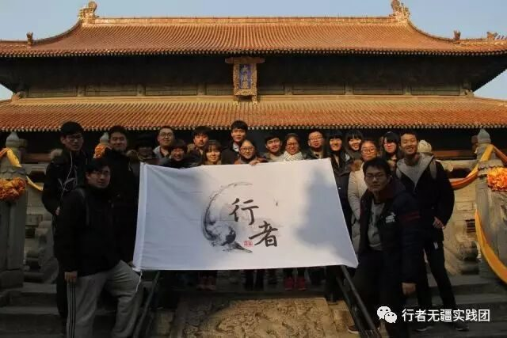

来自行者的第一封信|远行
远行

文：尉旖涵
初到济南，风轻日暖。
放下行李，当我抬头看向这座千年古城的时候，一切疲劳，都化为了好奇与喜悦。
山东大学条条幽径都以伟人之名命名，一点一滴都充斥着文化的气息。千佛山佛像林立，佛教气息浓郁，让人心中肃然起敬。可是，最令我难以忘却的，却是趵突泉。


秋雨黄花瘦，春流漱玉声。漱玉泉清澈精致，一坛清浅的泉水在前，无声流淌，其后却是深泉。如同读易安的词，最初给人的感觉很细腻柔和，但是其后却隐藏着无穷的含义，一语难尽，一泉难抵。
而主泉泉水上涌，三柱泉柱争先恐后地上涌，地下之泉水，蓄势待发，一旦能有机会上涌，绝不甘落后。庞大的趵突泉，果真气势恢宏。
一圈下来，兜兜转转，大大小小的泉看过去，又回到最初的出发地点。开始，结束，同一个地方，却是不同的心境。这是千年流淌下来的文化，而我无法感同身受易安后来的憔悴与凄凉，只是这泉水悠悠，那份凭平静与豁达，却正呼应了她词中的字里行间。
我觉得文化两个字，在自然中体现的淋漓尽致，一如这泰山。
一览众山小。我无缘体会这句豪气万丈的感觉，只是这山路九曲，山腰埋云，光仰视，就足够我心领神会了。
泰山身为天下第一山，代表着齐鲁的自然文化，而这千年古城，最杰出的，还要数人文了。

曲阜为儒家发源之地，孔子之乡，更是山东文化的精髓。
千年前的三间茅草屋，如今扩充为一座庙宇，这不仅是历代帝王对于圣贤之道的尊敬，更是天下万民的守护与传承。楼阁庙宇，无一不体现传统匠人的智慧；浮雕石碣，将庄严神圣的文化底蕴笼罩整个孔庙，游龙巨兽，千年来镇守着这文化宝地，我生而为中国人，自豪感油然而生。
功夫未至难寻奥。对于文化，我想我连表皮都没有了解到，趵突泉让我看到周而复始，自然文化，使我心境平和，泰山让我感受到自然的鬼斧神工，而曲阜这神圣之地，天地清宁高下，日月东西寒暑，“君子之伤，君子之守。”
我想，对于这次调研，我的收获也不仅仅是文化，更是身边每一个人的协作与帮助，友谊与欢乐。我们清晨互相分散调研，每个人的风景各不相同，晚上再聚集一处，互相交流，我想这也是我在齐鲁自然文化中所学到的“周而复始”。
新的一天，新的起点，
我们在循环往复中度过，
每次却是不同的心境与感受。
这是文化，亦是成长。